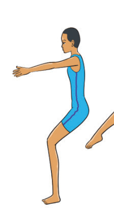
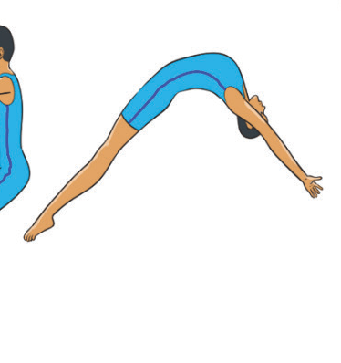
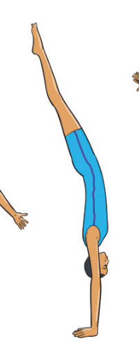
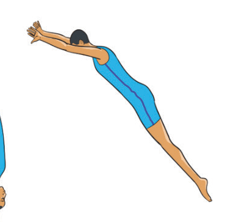
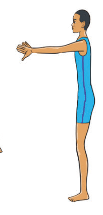

used in tumbling passes, beam routines, and as a progression toward advanced skills like back tucks and backflips. The following steps will help you practice back handspring:
(i)
Stand with feet hip-width apart, arms by the ears;
(ii) Bend knees slightly and lean backward, keeping the chest lifted;
(iii) Swing arms forcefully upward while pushing off the toes, and the body tilts backward in an arched position;
(iv) Reach the ground with hands shoulder-width apart while the legs continue moving over the body in a straight, tight position;
(v) Push hands off the ground aggressively, the back straightens as the feet approach the floor;
(vi) Land with feet together, knees slightly bent and arms high, Figure 4.42; and
(vii) Repeat the practice several times to perfect the skill.





Scissors leap
A scissors leap in gymnastics is a jump where the gymnast kicks one leg forward while the other leg moves backward, creating a scissor-like motion in the air. The gymnast’s body should be fully extended with both legs in a split position, and the arms are typically raised or in a controlled position to maintain balance and grace. The following steps will help you practice scissors leap: